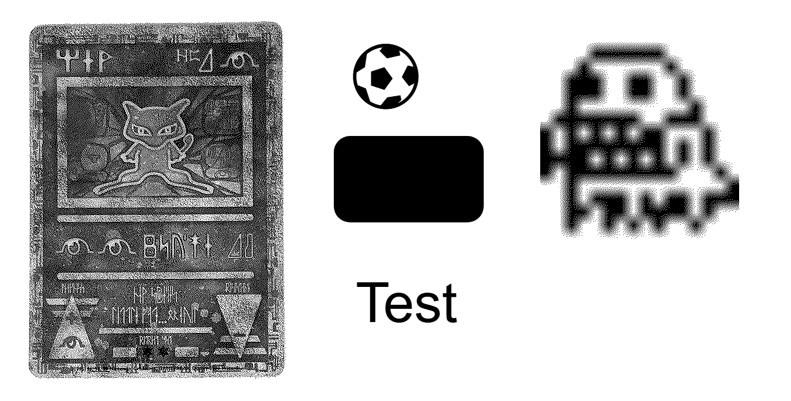
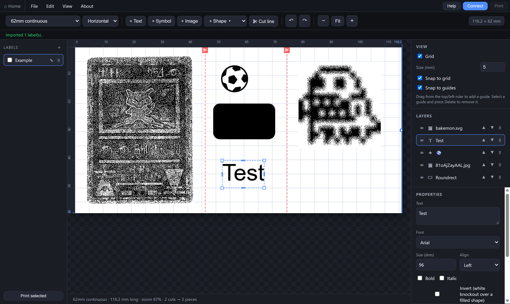
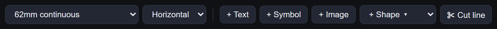
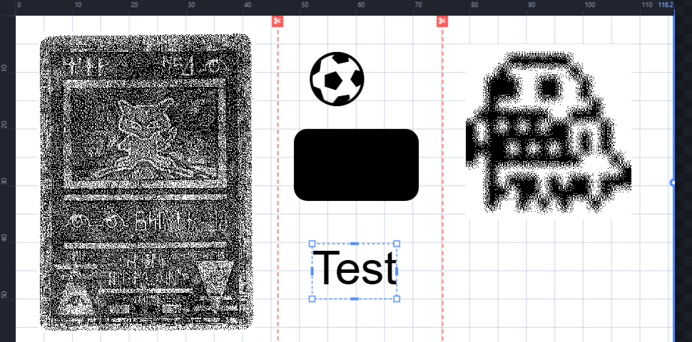
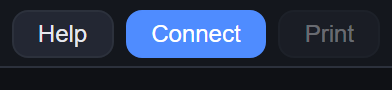
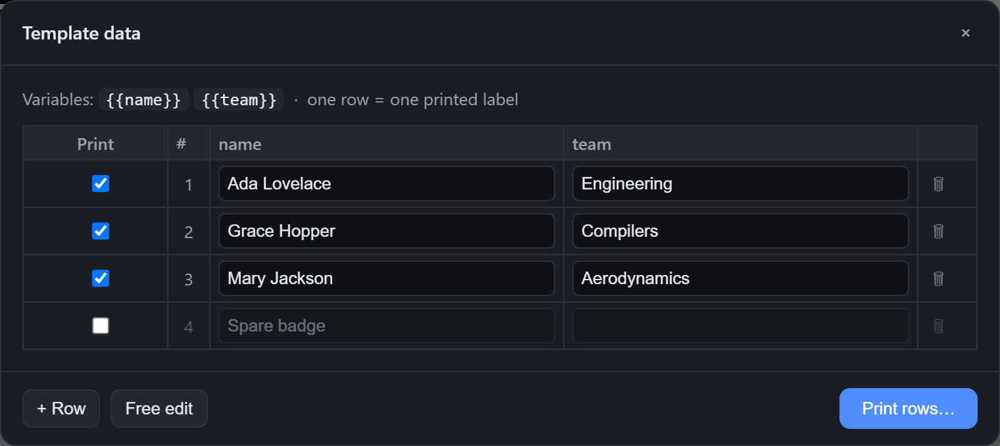
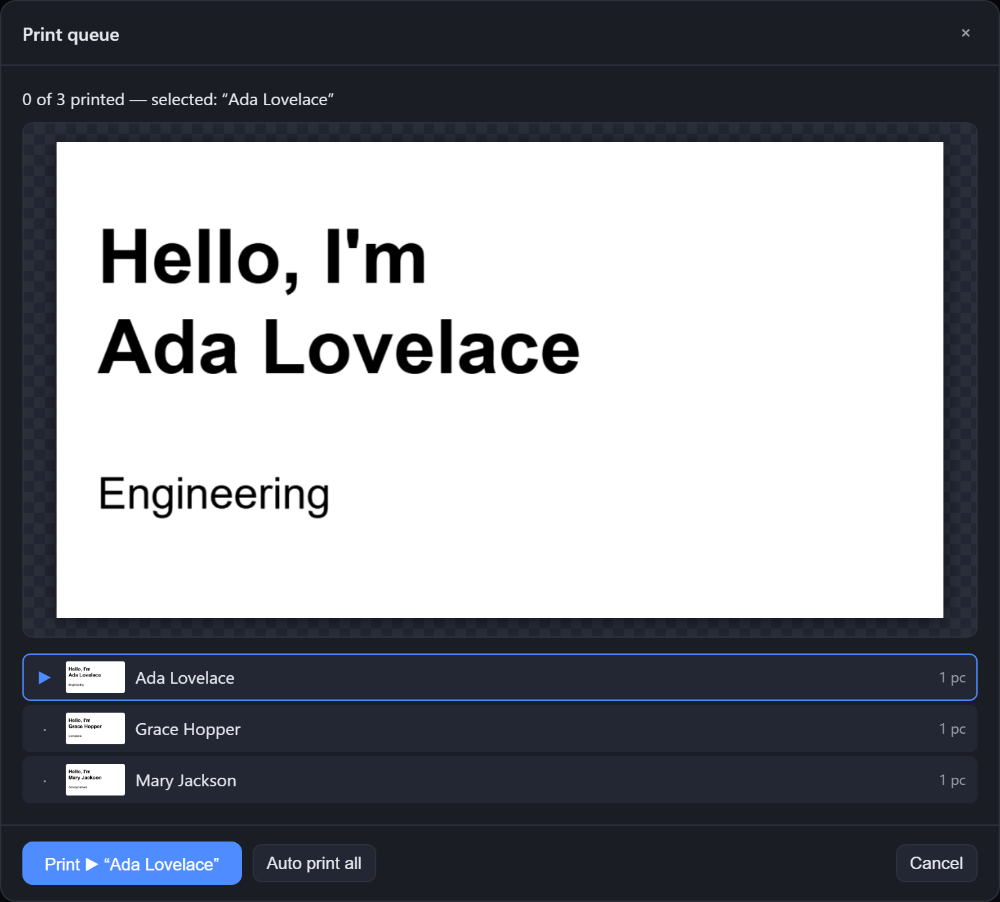
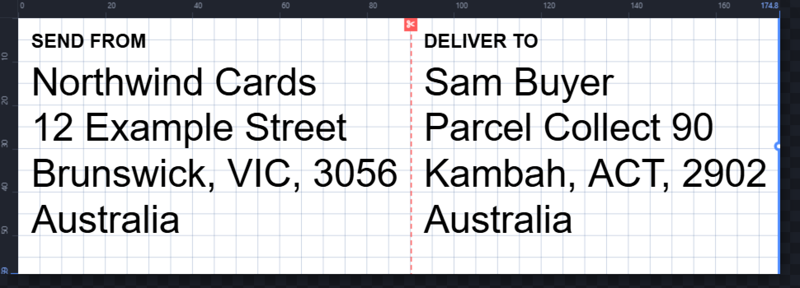

Labels for the Brother QL-700, printed from your browser.
A label designer that drives the printer directly over WebUSB. No Brother drivers, no P-touch software, nothing to install. It runs entirely on your device and keeps working offline.
Open the editor Set up the printer first →
This browser has no WebUSB, so it can design but not print. Use Google Chrome or Microsoft Edge to print.

The editor

1 2 3 4 5 6 7 8- Tape. Match the roll that's loaded — 62 mm or 29 mm continuous, or a die-cut size. On continuous tape, drag the label's right edge to set its length.
- Add things. Text, a symbol from ~100 glyphs, an image (converted to black & white dots automatically), or a shape. Drag to move; handles scale and stretch; R rotates.
- Cut line. Splits the label into pieces that print and cut in sequence.
- Labels. Every label in your workspace. Tick several and press Print selected to run them as a batch. Autosaves in the browser.
- Canvas. Rulers in millimetres. Drag from a ruler to add a guide; the grid and guides snap.
- Layers. Order, show or hide, delete.
- Properties of whatever is selected — font, size, alignment, fill, stroke, invert.
- Connect once per session, then Print.
Print a label
-
Load a roll and pick the same tape in the editor. A flashing red light on the printer nearly always means these don't match.

Design. Start with + Text, type in the Properties panel, drag it into place. Keep text big — it's a 300 dpi thermal head, so hairlines and light grey don't survive.
Cut it up if you like. Each cut line makes a separate piece: sender and receiver on one job, or a strip of identical tags.

-
Connect, then Print. Choose QL-700 in the browser's device list. Chrome remembers it, so next time it reconnects on its own.

Many labels from one design
Put {{name}}-style variables in any text, then open File → Template data…. One row is one printed label; untick a row to skip it. Free edit lets you paste a whole list with | between columns. Print rows… opens the queue, where you step through with a preview of each label or let it run.


Shipping PDFs
File → Import shipping PDF… reads the address page of an eBay-style shipping PDF and makes a label with the Send from block, a cut, then the Deliver to block. Pick several PDFs at once to import them all.

Set up the printer once
- Use Chrome or Edge. WebUSB only exists in Chromium browsers. Firefox and Safari can design, not print.
- Turn off Editor Lite. Hold the printer's Editor Lite button for about a second until its green light goes out. While it's lit the printer pretends to be a USB stick.
- Windows only: swap the driver with Zadig. Brother's driver blocks the browser, so give the printer the generic WinUSB one instead:
- Run Zadig · Options → List All Devices.
- Select QL-700. The USB ID must read
04F9 2042. If it says2049, Editor Lite is still on — go back to step 2. - Target driver WinUSB → Replace Driver. Unplug and replug the printer.
- Connect. Open the editor, press Connect, choose QL-700. The status line turns green and Print becomes available.
macOS and Linux usually need only steps 1 and 2.
Undo the driver swap
To use Brother's software again: open Device Manager → Universal Serial Bus devices → right-click QL-700 → Uninstall device, ticking Attempt to remove the driver. Replug the printer; if Windows doesn't restore Brother's driver by itself, reinstall it from support.brother.com. Re-run Zadig whenever you want to come back.
Problems
- The printer isn't in the device list
- Editor Lite light off? WinUSB installed (Windows)? Try another port or cable, and close any Brother software that might hold the printer open.
- Red flashing light
- Tape mismatch, empty roll, or open cover. Pick the matching tape and press the cut button to clear the error.
- Images look speckled
- Every dot is black or white; photos are dithered. It reads fine at arm's length. Prefer simple, high-contrast artwork.
- My labels vanished
- The workspace lives in this browser's storage. File → Export project… saves it as a file; Import… brings it back anywhere.
- Other QL models?
- Built and tested for the QL-700. Close relatives that share its raster protocol may work with the same driver swap; untested.